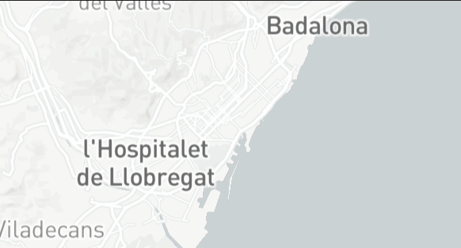

BARCELONA
POPULATION
METRO: 4,735,000
HIGHLIGHT RANKING


Barcelona is an almost ideal European city, one with near-perfect weather year-round, three miles of beaches within city limits, iconic parks, striking architecture and colorful neighborhoods that march to their own beat—artistic, sophisticated, bohemian. No wonder it ranks #6 in our Place category, which measures both the natural and built environments of a city. And no wonder the city was dealing with 12 million tourists annually, almost double its entire regional population.Barcelona responded with some of the strictest vacation rental restrictions anywhere, aimed at controlling the effects of runaway tourism—like real estate investors who snatch up apartments only to rent them on Airbnb, depleting an already limited supply. The city also elected mayor Ada Colau on a Barcelona-for-citizens platform. Ultimately the pandemic took care of “the tourist problem,” with devastating results. Infection flare-ups meant that tourist founts like France banned all citizen travel to the Barcelona region for most of last year and local sources estimate that almost 40 percent of the shuttered bars and restaurants may never reopen. For a city with the #3 ranking for global Nightlife, this has been catastrophic.Fortunately, tourism is returning—slowly after 2021 saw three times the visitors from 2020, but if early numbers from 2022 are an indication, accelerating fast. What they’ll find is more non-vehicular access to the city. Mayor Colau has delivered on her promise to reach 125 miles of bike lanes, with another 20 to be completed by 2023. The city has also moved forward with aggressive car traffic restrictions as part of the mayor’s superblock initiative, replacing parking and roads with playgrounds and public seating. See the future for yourself at Passeig de Sant Joan, recently named one of the world’s best streets by Time Out. Sant Joan is one of Spain’s first green corridors, designed for self- propelled mobility and exploration with its bicycle lanes, expansive sidewalks, greenery and sprawling outdoor seating. Extra bonus: it’s also home to the city’s beloved food market, Mercat de l’Abaceria (at least until it moves into more permanent digs later this decade).The city’s top 10 Outdoors ranking should improve after its renewal. And getting to the city’s #10-ranked Sights & Landmarks by bike or foot will also help visitors discover more of its streets. And those are reopening, too. The city’s iconic La Rambla boulevard is also in the midst of ambitious renos to make it more walkable with fewer cars, while elevating the area’s architecture and art heritage, culminating with the reopening of the area’s stunning 17th-century Teatre Principal in 2024.